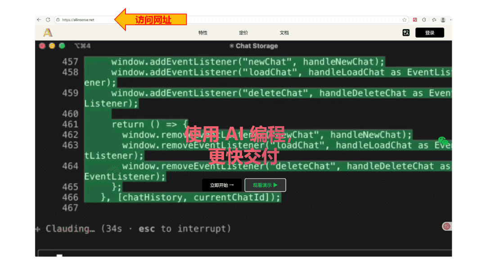

Claude Code:拉开新时代的差距
Claude Code ：拉开新时代的差距

for More:-
https://allinsense.net
从负重前行到加速狂奔
一、把重复劳动从开发者脑中剥离出来
多数开发任务并不困难，但重复性极强，会持续消耗开发者的精气神：
CRUD（增删改查）反复写
一样的校验逻辑重复实现
相似报表的 SQL 再重复一遍
页面结构从零搭起
文档不断补、不断改
这些都不是技术挑战，而是 精神消耗点
。
Claude Code 可以全权处理这些“脏活累活”，
让开发者不再被低价值的重复任务拖住。
开发者的工作从 “写重复代码”
升级为 “审核与优化”
。
注意力不再被碎片化任务消耗，可以更专注于真正有价值的业务逻辑与架构思考。
二、从“怕写错”到“放心改”——责任压力大幅下降
在日常开发中，心智负担往往来自这些真实场景：
写快怕错
写慢被催
改老代码怕出事故
文档不全干瞪眼
代码写到一半需求又改
Claude Code 能把这些压力降低 约 95%
：
- 文档不全？
Claude Code 可直接分析源码，自动生成准确的接口与逻辑说明，并辅助编写单元测试验证。交接项目时真正做到“手拿把掐”。
- 体力活太多容易写错？
让 Claude Code 按你的范式生成代码，输出零语法错误、风格统一的版本，你只需做最终 review。
- 老项目像“屎山”一样耦合混乱？
Claude Code 可对复杂代码进行抽丝剥茧式分析，总结隐式逻辑，生成测试用例，并指导渐进式优化或重构。
Git 提供兜底，你不再需要害怕动旧代码。
- 需求变更频繁？
让 Claude Code 快速生成新版本，你只负责审核结果，不再担心耦合、缺陷或遗漏。
底层逻辑很简单——
高风险的部分 AI 帮你兜底，高价值的部分你来做判断。
开发 → 测试 → 运维
整条流水线全面升级
一、由数据流视角辅助排查问题，实现端到端提速
在排查问题时，Claude Code 可以从整体数据流入手：
分析各服务、各模块的数据流向
关联日志、调用链、异常点
识别潜在边界问题
给出可验证的推论与路径
LLM 在逻辑推演上的缜密度远超人类，
可以持续缩短沟通、排查、验证的整体周期。
一句话：
不要扯皮，show me your code，让 Claude Code 来推断真实问题。
整条流水线在这种机制下会变得前所未有的顺畅。
二、跨领域沟通不再痛苦
Claude Code 可以作为“专业翻译器”，在团队内部承担沟通润滑剂角色：
不同专业背景的人，通过 Claude Code 翻译彼此的术语
不同系统之间的逻辑和数据关系，用 Claude Code 自动对齐
文档、说明、需求被统一成结构化表达
沟通效率从“靠猜”变成“靠验证”，
沟通成本极大降低。
最终效果往往接近：
效率提升近 10 倍。
研发手拿把掐
一、从复杂数据关系中提炼可落地方案
Claude Code 能在需求输入后自动：
分析业务逻辑
提取关键数据关系
找出可落地的设计思路
给出结构化的实现方案
“我搞懂了需求但不知道如何下手”的情况 会显著减少。
二、从复杂源码中抽取关键逻辑
无论是多语言混合的老系统，还是规模庞大的开源项目，Claude Code 只需输入仓库，就能从“数据流视角”分析核心逻辑：
代码如何组织
功能如何分层
哪些模块可以复用
哪些部分值得重写
哪些设计可以借鉴
哪些细节值得对齐
这让追赶前沿技术不再依赖“一定要看完全部源码”，
而是从关键路径开始理解，极大降低心智负担。
为什么是 Claude Code？
之所以是 Claude Code，而不是其他工具，根本原因在于它不仅“好用”，还具备 行业基础设施级别的开放能力
。
首先，Claude 团队提出了 AI 领域广泛认可的 MCP（Model Context Protocol）标准
。
MCP 让 AI 和工具之间有了一套统一的通信方式，使任何系统、插件、企业内部工具都能以标准化方式被 AI 调用。
这意味着未来的整个生态都会朝这个协议对齐，创新速度和兼容性都会指数级提升。
其次，Claude Code 是 模型中立的
。
它不仅能用 Claude 本身，还能自由切换不同厂商、不同能力的 LLM，甚至使用企业内部的自建模型。
所有模型的上下文、格式、调用方式都由 Claude Code 做统一协调，团队不再受限于单一供应商，也不用担心未来生态变化带来的锁死风险。
两点结合起来，形成一个明确的优势：
Claude Code 不是一个工具，而是一个开放、可扩展、可替换的未来开发平台。
它能随着行业、模型、生态的变化持续演进，而不是被某个技术栓死在当下。
在一个迭代越来越快的时代，选择 Claude Code，本质上是在选择：
一个不断成长的生态
一个可自由切换模型的工作流
一个能适配未来变化的基础设施
这就是为什么真正的差距，不在工具功能，而在工具所站的“未来位置”。